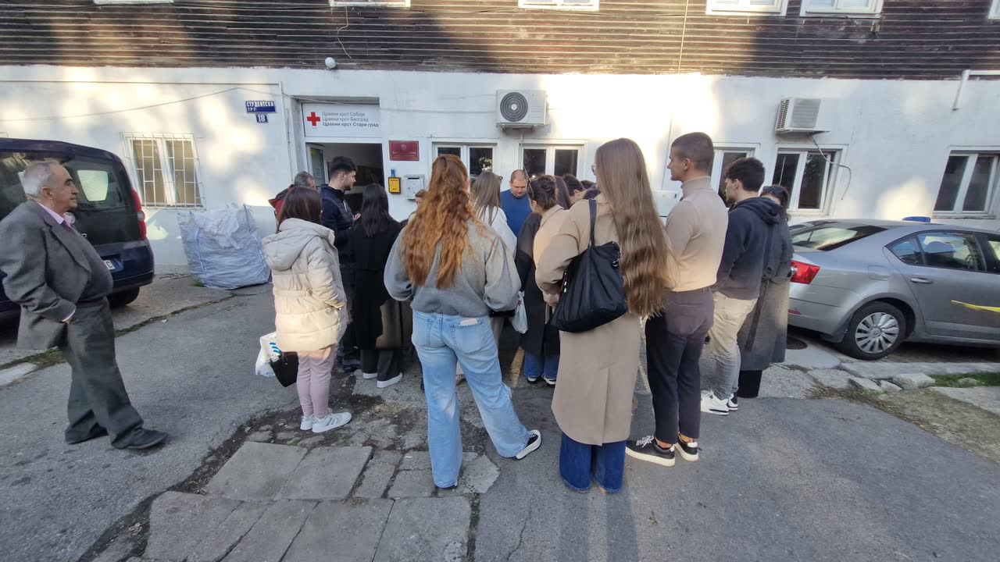
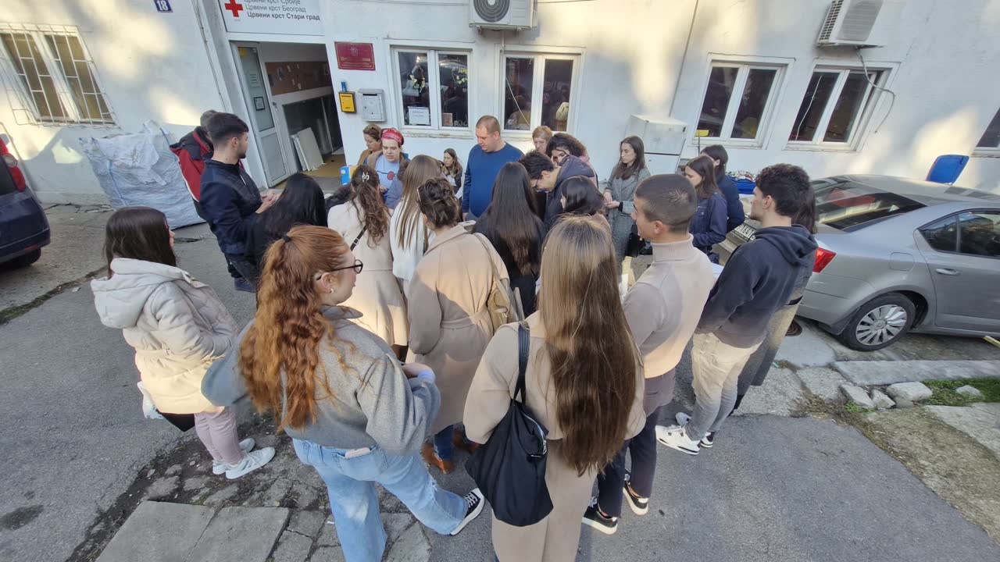
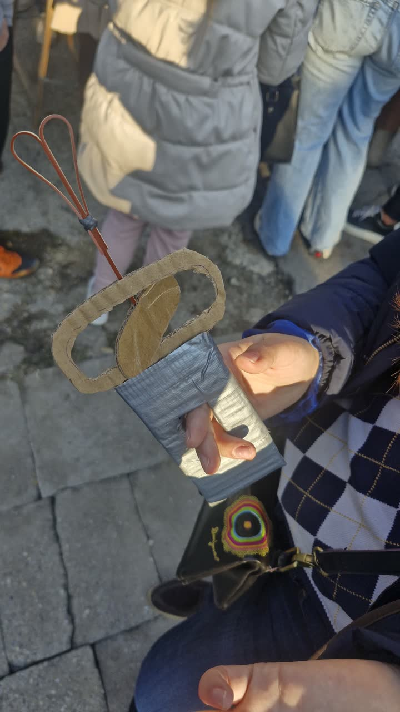
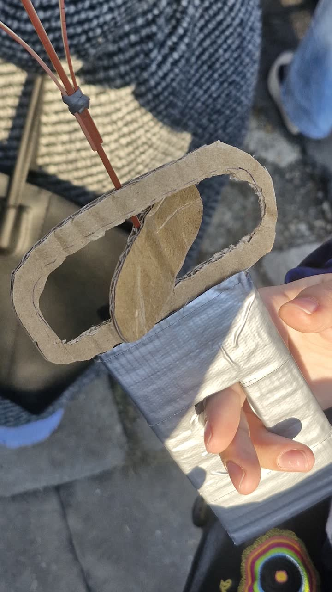
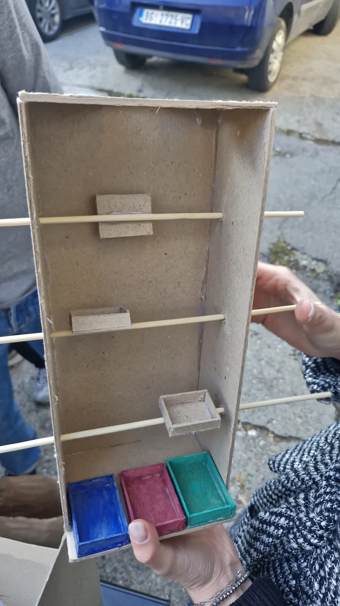
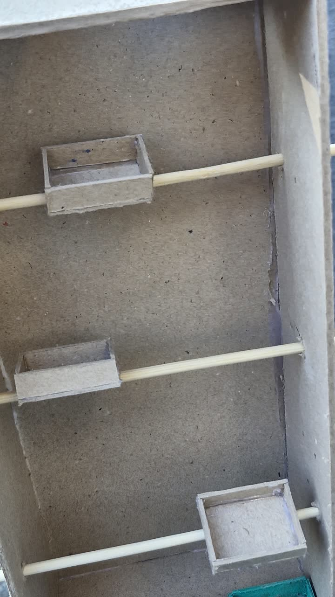
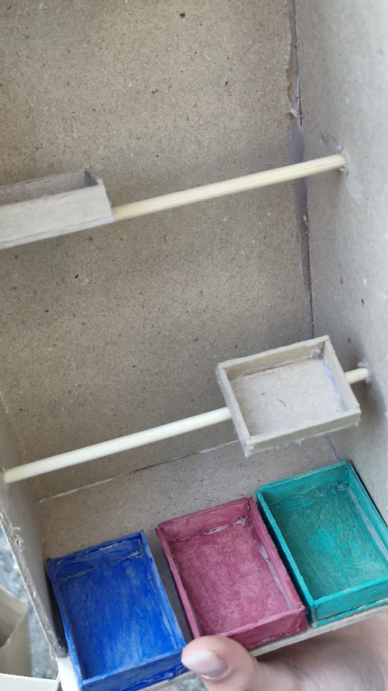

01

Principi univerzalnog dizajna Univerzitet „Union — Nikola Tesla”, Beograd · Fakultet za graditeljski menadžment 2026/2027 · prvi (zimski) semestar · treća godina
Nedelja 6 · Udruženje „Živimo zajedno”, Beograd ·
Četvrta poseta udruženju, petak 06.11.2026, u dvorištu na Studentskom trgu 18 (14:23–14:55). Dvadeset dvoje studenata donelo je unapređene prototipe igračaka i prve radove iz reciklaže tekstila. Kroz 21 fotografiju, poređanu redom kojim se događaj odvijao, pratimo kako su prototipi izašli na zajednički sto na otvorenom, kako su ih korisnici sami birali i isprobavali u rukama, i gde je svaki predmet pokazao svoju snagu ili zatražio sledeću doradu.
Događaj kroz slike
21 kadar redom kojim se poseta odvijala, sa 12 prepoznatih radova i zapažanjima o onome što se dogodilo u rukama korisnika.














Ko je bio tamo
Svako ime nosi svoj zapis u dnevniku, sa svim nedeljama u kojima se pojavljuje.